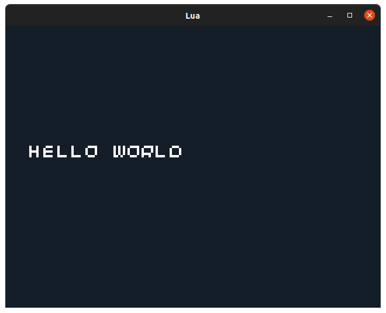
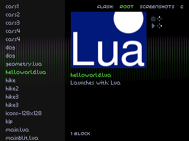

Lua 0. Getting Started
Posted on Fri 02 July 2021 in Lua
Introduction
Lua on the 32Blit is an application, like any other, with two key differences:
- Instead of being a game in its own right, it understands and runs
.luascripts - It registers a file association with the 32Blit launcher so you can browse run
.luascripts right from the main menu
This introduction will teach you how to run 32Blit Lua files on your computer and on the 32Blit:
Debugging Locally
You don't strictly need a 32Blit for testing out your .lua scripts. You can build the Lua engine from source and run it right on your computer or grab the latest release for your platform and run a .lua file with the --launch_path argument like so:
./32blit_lua --launch_path script.lua
Running On 32Blit
You will need an SD card inserted in your 32Blit to save .lua files or resources.
For copying games over to your 32Blit you'll need the 32blit tools. These require Python 3 and you can install them with:
python3 -m pip install 32blit --user
You must also install 32blit_lua.blit onto your device so it can recognise and run Lua. Grab the latest release for the 32Blit (STM32), eg: 32blit-lua-v0.0.2-STM32.zip. Extract the file and use the 32Blit tool to install it:
32blit install 32blit_lua.blit
You should now be able to use the 32Blit tools to save Lua scripts, images and more to your device:
32blit install my_script.lua
This will save my_script.lua to the root of your SD card, in the main menu this is called "ROOT" in the list at the top, and you can navigate between "FLASH:" and "ROOT" with the left/right buttons on your 32Blit.
Navigate to your script and launch it with the right (pink) face button.
Basics Of A 32Blit Lua Script
Every Lua script on the 32Blit has some basic requirements and must define the following functions:
init- for setting things up when your game first launchesupdate- for updating the state of your game, world or physicsrender- called at 50FPS, for drawing your game world to the screen
A basic Lua script might look something like this:
function init()
end
function render(time)
screen.pen = Pen(20, 30, 40)
screen.clear()
screen.pen = Pen(255, 255, 255)
screen.text("Hello World", minimal_font, Point(10, 50))
end
function update(time)
end
This code will display the text "Hello World". You can save it as helloworld.lua and run it on your computer with:
./32blit_lua --launch_path helloworld.lua
You should see something like this:

Or you can save it to your 32blit with:
32blit install helloworld.lua
And it will show up in the launcher like this:
